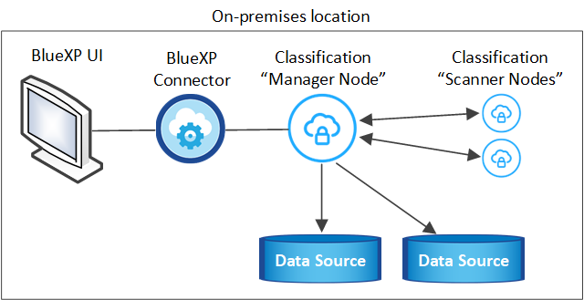
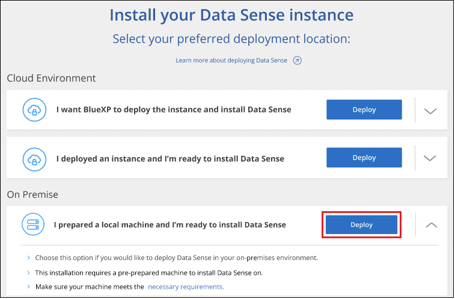

Notes de mise à jour
Notes de mise à jour
Installez la classification BlueXP sur un hôte sans accès Internet
 Suggérer des modifications
Suggérer des modifications
Procédez en quelques étapes pour installer la classification BlueXP sur un hôte Linux dans un site sur site qui ne dispose pas d'un accès Internet, également appelé « mode privé ». Ce type d'installation est parfait pour vos sites sécurisés.
Notez que vous pouvez également "Déployez la classification BlueXP dans un site sur site disposant d'un accès Internet".
Le script d'installation de la classification BlueXP commence par vérifier si le système et l'environnement répondent aux prérequis requis. Si les conditions préalables sont toutes remplies, l'installation démarre. Si vous souhaitez vérifier les prérequis indépendamment de l'installation de la classification BlueXP, vous pouvez télécharger un pack logiciel distinct qui teste uniquement les prérequis. "Découvrez comment vérifier si votre hôte Linux est prêt à installer la classification BlueXP".
Sources de données prises en charge
Lorsqu'il est installé en mode privé (parfois appelé site « hors ligne » ou « invisible »), la classification BlueXP ne peut analyser les données qu'à partir de sources de données également locales sur le site. À ce stade, la classification BlueXP peut analyser les sources de données locales suivantes :
-
Systèmes ONTAP sur site
-
Schémas de base de données
-
Comptes SharePoint sur site (SharePoint Server)
-
Partages de fichiers CIFS ou NFS non NetApp
-
Stockage objet qui utilise le protocole simple Storage Service (S3)
Aucune prise en charge n'est actuellement prise en charge pour l'analyse de Cloud Volumes ONTAP, Azure NetApp Files, FSX pour ONTAP, AWS S3 ou Google Drive, Comptes OneDrive ou SharePoint Online lorsque la classification BlueXP est déployée en mode privé.
Limites
La plupart des fonctionnalités de classification BlueXP fonctionnent lorsqu'elles sont déployées dans un site sans accès Internet. Toutefois, certaines fonctionnalités nécessitant un accès à Internet ne sont pas prises en charge, par exemple :
-
Gestion des étiquettes Microsoft Azure information protection (AIP)
-
Envoi d'alertes par e-mail aux utilisateurs BlueXP lorsque certaines stratégies critiques renvoient des résultats
-
Définition des rôles BlueXP pour différents utilisateurs (par exemple, Account Admin ou Compliance Viewer)
-
Copie et synchronisation des fichiers source à l'aide de la copie et de la synchronisation BlueXP
-
Réception des commentaires de l'utilisateur
-
Mises à niveau logicielles automatisées depuis BlueXP
Le connecteur BlueXP et la classification BlueXP nécessitent toutes deux des mises à niveau manuelles périodiques pour activer de nouvelles fonctionnalités. La version de classification BlueXP est visible en bas des pages de l'interface de classification BlueXP. Vérifier le "Notes de version de la classification BlueXP" pour voir les nouvelles fonctionnalités dans chaque version et si vous voulez ou non ces fonctionnalités. Vous pouvez ensuite suivre les étapes à "Mettez à niveau le connecteur BlueXP" et Mettez à niveau votre logiciel de classification BlueXP.
Démarrage rapide
Pour commencer rapidement, suivez ces étapes ou faites défiler jusqu'aux sections restantes pour obtenir de plus amples informations.
 Installez le connecteur BlueXP
Installez le connecteur BlueXPSi aucun connecteur n'est déjà installé en mode privé, "Déployer le connecteur" Sur un hôte Linux.
 Examinez les conditions préalables à la classification BlueXP
Examinez les conditions préalables à la classification BlueXPAssurez-vous que votre système Linux est conforme au configuration requise pour l'hôte, que tous les logiciels requis sont installés, et que votre environnement hors ligne répond aux exigences autorisations et connectivité.
 Téléchargez et déployez la classification BlueXP
Téléchargez et déployez la classification BlueXPTéléchargez le logiciel de classification BlueXP depuis le site de support NetApp et copiez le fichier d'installation sur l'hôte Linux que vous prévoyez d'utiliser. Lancez ensuite l'assistant d'installation et suivez les invites pour déployer l'instance de classification BlueXP.
 Abonnez-vous au service de classification BlueXP
Abonnez-vous au service de classification BlueXPLes 1 premiers To de données analysés par le système de classification BlueXP dans BlueXP sont gratuits pendant 30 jours. Une licence NetApp BYOL est requise pour continuer l'analyse des données après ce point.
Installez le connecteur BlueXP
Si aucun connecteur BlueXP n'est déjà installé en mode privé, "Déployer le connecteur" Sur un hôte Linux de votre site hors ligne.
Préparez le système hôte Linux
Le logiciel de classification BlueXP doit s'exécuter sur un hôte répondant à des exigences spécifiques en termes de système d'exploitation, de RAM, de logiciels, etc.
-
La classification BlueXP n'est pas prise en charge sur un hôte partagé avec d'autres applications : l'hôte doit être un hôte dédié.
-
Lors de la création du système hôte sur site, vous pouvez choisir entre trois tailles de système selon la taille du dataset que vous prévoyez d'analyser par la classification BlueXP.
Taille du système CPU RAM (la mémoire d'échange doit être désactivée) Disque Très grand
32 processeurs
128 GO DE RAM
1 To SSD sur /, ou
- 100 Gio disponible sur /opt
- 895 Gio disponible sur /var/lib/docker
- 5 Gio sur /tmpGrand
16 processeurs
64 GO DE RAM
500 Gio de SSD sur /, ou
- 100 Gio disponible sur /opt
- 395 Gio disponible sur /var/lib/docker
- 5 Gio sur /tmpMoyen
8 processeurs
32 GO DE RAM
200 Gio de SSD sur /, ou
- 50 Gio disponible sur /opt
- 145 Gio disponible sur /var/lib/docker
- 5 Gio sur /tmpPetit
8 processeurs
16 GO DE RAM
100 Gio de SSD sur /, ou
- 50 Gio disponible sur /opt
- 45 Gio disponible sur /var/lib/docker
- 5 Gio sur /tmpNotez qu'il existe des limites lors de l'utilisation des systèmes plus petits. Voir "Utilisation d'un type d'instance plus petit" pour plus d'informations.
-
Lors du déploiement d'une instance de calcul dans le cloud pour votre installation de classification BlueXP, nous vous recommandons de opter pour un système qui répond à la configuration requise pour les « grands » systèmes ci-dessus :
-
Type d'instance AWS EC2: Nous recommandons "m6i.4xlarge". "Consultez la section autres types d'instances AWS".
-
Taille de VM Azure: Nous recommandons "Standard_D16s_v3". "Consultez la section autres types d'instances Azure".
-
Type de machine GCP: Nous recommandons "n2-standard-16". "Voir autres types d'instances GCP".
-
-
Autorisations de dossier UNIX : les autorisations UNIX minimales suivantes sont requises :
Dossier Autorisations minimales /tmp
rwxrwxrwt/opt
rwxr-xr-x/var/lib/docker
rwx------/usr/lib/systemd/system
rwxr-xr-x -
Système d'exploitation :
-
Les systèmes d'exploitation suivants nécessitent l'utilisation du moteur de mise en conteneurs Docker :
-
Red Hat Enterprise Linux version 7.8 et 7.9
-
CentOS versions 7.8 et 7.9
-
Ubuntu 22.04 (requiert la classification BlueXP version 1.23 ou supérieure)
-
-
Les systèmes d'exploitation suivants nécessitent l'utilisation du moteur de conteneur Podman et requièrent la classification BlueXP version 1.26 ou supérieure :
-
Red Hat Enterprise Linux version 9.0, 9.1 et 9.2
Notez que les fonctionnalités suivantes ne sont pas prises en charge actuellement avec RHEL 9.x :
-
Installation dans un site sombre
-
Numérisation distribuée ; utilisation d'un nœud de scanner maître et de nœuds de scanner distants
-
-
-
-
Gestion des abonnements Red Hat : l'hôte doit être enregistré auprès de la gestion des abonnements Red Hat. S'il n'est pas enregistré, le système ne peut pas accéder aux référentiels pour mettre à jour les logiciels tiers requis pendant l'installation.
-
Logiciels supplémentaires : vous devez installer les logiciels suivants sur l'hôte avant d'installer la classification BlueXP :
-
En fonction du système d'exploitation que vous utilisez, vous devrez installer l'un des moteurs de mise en conteneurs :
-
Docker Engine version 19.3.1 ou supérieure. "Voir les instructions d'installation".
"Regardez cette vidéo" Pour une démonstration rapide de l'installation de Docker sur CentOS.
-
Podman version 4 ou supérieure. Pour installer Podman, mettez à jour vos packages système (
sudo yum update -y), puis installez Podman (sudo yum install podman -y).
-
-
Python version 3.6 ou supérieure. "Voir les instructions d'installation".
-
-
Considérations NTP : NetApp recommande de configurer le système de classification BlueXP pour utiliser un service NTP (Network Time Protocol). L'heure doit être synchronisée entre le système de classification BlueXP et le système BlueXP Connector.
-
Firesund considérations: Si vous prévoyez d'utiliser
firewalld, Nous vous recommandons de l'activer avant d'installer la classification BlueXP. Exécutez les commandes suivantes pour configurerfirewalldPour qu'il soit compatible avec la classification BlueXP :firewall-cmd --permanent --add-service=http firewall-cmd --permanent --add-service=https firewall-cmd --permanent --add-port=80/tcp firewall-cmd --permanent --add-port=8080/tcp firewall-cmd --permanent --add-port=443/tcp firewall-cmd --reload
Notez que vous devez redémarrer Docker ou Podman chaque fois que vous activez ou mettez à jour
firewalldparamètres.

|
L'adresse IP du système hôte de classification BlueXP ne peut pas être modifiée après l'installation. |
Vérifiez les conditions préalables à la classification BlueXP et BlueXP
Vérifiez les conditions préalables suivantes afin de vous assurer que votre configuration est prise en charge avant de déployer la classification BlueXP.
-
Assurez-vous que le connecteur dispose des autorisations nécessaires pour déployer les ressources et créer des groupes de sécurité pour l'instance de classification BlueXP. Vous trouverez les dernières autorisations BlueXP dans "Règles fournies par NetApp".
-
Assurez-vous de pouvoir maintenir la classification BlueXP en cours d'exécution. L'instance de classification BlueXP doit continuer à analyser vos données en continu.
-
Assurez la connectivité du navigateur web à la classification BlueXP. Une fois la classification BlueXP activée, assurez-vous que les utilisateurs accèdent à l'interface BlueXP depuis un hôte qui dispose d'une connexion à l'instance de classification BlueXP.
L'instance de classification BlueXP utilise une adresse IP privée pour s'assurer que les données indexées ne sont pas accessibles aux autres. Par conséquent, le navigateur Web que vous utilisez pour accéder à BlueXP doit disposer d'une connexion à cette adresse IP privée. Cette connexion peut provenir d'un hôte situé dans le même réseau que l'instance de classification BlueXP.
Vérifiez que tous les ports requis sont activés
Vous devez vous assurer que tous les ports requis sont ouverts pour la communication entre le connecteur, la classification BlueXP, Active Directory et vos sources de données.
| Type de connexion | Ports | Description |
|---|---|---|
Classification de Connector <> BlueXP |
8080 (TCP), 6000 (TCP), 443 (TCP) ET 80 |
Le groupe de sécurité du connecteur doit autoriser le trafic entrant et sortant sur les ports 6000 et 443 vers et depuis l'instance de classification BlueXP.
|
Connecteur <> cluster ONTAP (NAS) |
443 (TCP) |
BlueXP détecte les clusters ONTAP via HTTPS. Si vous utilisez des stratégies de pare-feu personnalisées, elles doivent répondre aux exigences suivantes :
|
Classification BlueXP <> cluster ONTAP |
|
La classification BlueXP nécessite une connexion réseau à chaque sous-réseau Cloud Volumes ONTAP ou système ONTAP sur site. Les groupes de sécurité pour Cloud Volumes ONTAP doivent autoriser les connexions entrantes à partir de l'instance de classification BlueXP. Assurez-vous que les ports suivants sont ouverts pour l'instance de classification BlueXP :
Les règles d'exportation des volumes NFS doivent autoriser l'accès à partir de l'instance de classification BlueXP. |
Classification BlueXP <> Active Directory |
389 (TCP ET UDP), 636 (TCP), 3268 (TCP) ET 3269 (TCP) |
Un Active Directory doit déjà être configuré pour les utilisateurs de votre entreprise. De plus, la classification BlueXP requiert des informations d'identification Active Directory pour analyser les volumes CIFS. Vous devez disposer des informations pour Active Directory :
|
Si vous utilisez plusieurs hôtes de classification BlueXP pour augmenter la puissance de traitement afin d'analyser vos sources de données, vous devez activer des ports/protocoles supplémentaires. "Voir la configuration de port supplémentaire requise".
Installez la classification BlueXP sur l'hôte Linux sur site
Pour les configurations standard, le logiciel est installé sur un système hôte unique. "Découvrez ces étapes ici".

Pour les très grandes configurations dans lesquelles vous numérisez des pétaoctets de données, vous pouvez inclure plusieurs hôtes pour bénéficier d'une puissance de traitement supplémentaire. "Découvrez ces étapes ici".

Installation à un seul hôte pour les configurations courantes
Suivez ces étapes lors de l'installation du logiciel de classification BlueXP sur un hôte sur site unique dans un environnement hors ligne.
Notez que toutes les activités d'installation sont consignées lors de l'installation de la classification BlueXP. Si vous rencontrez des problèmes lors de l'installation, vous pouvez afficher le contenu du journal d'audit d'installation. Il est écrit dans /opt/netapp/install_logs/. "Pour en savoir plus, cliquez ici".
-
Vérifiez que votre système Linux est conforme à la configuration requise pour l'hôte.
-
Vérifiez que vous avez installé les deux packages logiciels prérequis (Docker Engine ou Podman et Python 3).
-
Assurez-vous que vous disposez des privilèges root sur le système Linux.
-
Vérifiez que votre environnement hors ligne répond aux besoins autorisations et connectivité.
-
Sur un système configuré en ligne, téléchargez le logiciel de classification BlueXP depuis le "Site de support NetApp". Le fichier que vous devez sélectionner est nommé DataSense-Offline-bundle-<version>.tar.gz.
-
Copiez l'ensemble d'installation sur l'hôte Linux que vous prévoyez d'utiliser en mode privé.
-
Décompressez le programme d'installation sur la machine hôte, par exemple :
tar -xzf DataSense-offline-bundle-v1.25.0.tar.gzCeci extrait le logiciel requis et le fichier d'installation réel cc_onsite_installer.tar.gz.
-
Décompressez le fichier d'installation sur la machine hôte, par exemple :
tar -xzf cc_onprem_installer.tar.gz -
Lancez BlueXP et sélectionnez gouvernance > Classification.
-
Cliquez sur Activer détection de données.

-
Cliquez sur Deploy pour démarrer l'installation sur site.

-
La boîte de dialogue Deploy Data Sense on local s'affiche. Copiez la commande fournie (par exemple :
sudo ./install.sh -a 12345 -c 27AG75 -t 2198qq --darksite) et collez-le dans un fichier texte pour pouvoir l'utiliser ultérieurement. Cliquez ensuite sur Fermer pour fermer la boîte de dialogue. -
Sur la machine hôte, entrez la commande que vous avez copiée, puis suivez une série d'invites, ou vous pouvez fournir la commande complète incluant tous les paramètres requis comme arguments de ligne de commande.
Notez que le programme d'installation effectue une pré-vérification afin de s'assurer que vos exigences système et réseau sont en place pour une installation réussie.
Entrez les paramètres comme demandé : Saisissez la commande complète : -
Collez les informations que vous avez copiées à partir de l'étape 8 :
sudo ./install.sh -a <account_id> -c <client_id> -t <user_token> --darksite -
Entrez l'adresse IP ou le nom d'hôte de la machine hôte de classification BlueXP afin qu'elle soit accessible par le système de connecteurs.
-
Entrez l'adresse IP ou le nom d'hôte de la machine hôte du connecteur BlueXP afin que le système de classification BlueXP puisse y accéder.
Vous pouvez également créer la commande entière à l'avance, en fournissant les paramètres d'hôte nécessaires :
sudo ./install.sh -a <account_id> -c <client_id> -t <user_token> --host <ds_host> --manager-host <cm_host> --no-proxy --darksiteValeurs variables :
-
Account_ID = ID du compte NetApp
-
Client_ID = connecteur client ID (ajoutez le suffixe "clients" à l'ID client s'il n'y en a pas déjà)
-
User_token = jeton d'accès utilisateur JWT
-
Ds_host = adresse IP ou nom d'hôte du système de classification BlueXP.
-
Cm_host = adresse IP ou nom d'hôte du système de connecteurs BlueXP.
-
Le programme d'installation de classification BlueXP installe les packages, enregistre l'installation et installe la classification BlueXP. L'installation peut prendre entre 10 et 20 minutes.
En cas de connectivité sur le port 8080 entre la machine hôte et l'instance de connecteur, vous verrez la progression de l'installation dans l'onglet de classification BlueXP.
Dans la page Configuration, vous pouvez sélectionner local "Clusters ONTAP sur site" et "les bases de données" que vous voulez numériser.
Vous pouvez également "Configurez les licences BYOL pour la classification BlueXP" À partir de la page du portefeuille digital BlueXP pour le moment. Vous ne serez facturé que lorsque votre essai gratuit de 30 jours se terminera.
Installation de plusieurs hôtes pour de grandes configurations
Pour les très grandes configurations dans lesquelles vous numérisez des pétaoctets de données, vous pouvez inclure plusieurs hôtes pour bénéficier d'une puissance de traitement supplémentaire. Lors de l'utilisation de plusieurs systèmes hôtes, le système principal est appelé le Manager node et les systèmes supplémentaires qui fournissent une puissance de traitement supplémentaire sont appelés scanner nodes.
Suivez ces étapes lors de l'installation du logiciel de classification BlueXP sur plusieurs hôtes sur site dans un environnement hors ligne.
-
Vérifiez que tous vos systèmes Linux pour les nœuds Manager et scanner sont conformes à la configuration requise pour l'hôte.
-
Vérifiez que vous avez installé les deux packages logiciels prérequis (Docker Engine ou Podman et Python 3).
-
Assurez-vous que vous disposez des privilèges root sur les systèmes Linux.
-
Vérifiez que votre environnement hors ligne répond aux besoins autorisations et connectivité.
-
Vous devez disposer des adresses IP des hôtes du nœud de scanner que vous prévoyez d'utiliser.
-
Les ports et protocoles suivants doivent être activés sur tous les hôtes :
Port Protocoles Description 2377
TCP
Communications de gestion du cluster
7946
TCP, UDP
Communication inter-nœuds
4789
UDP
Superposition du trafic réseau
50
ESP
Trafic du réseau de superposition IPSec chiffré (ESP)
111
TCP, UDP
Serveur NFS pour le partage de fichiers entre les hôtes (requis de chaque nœud de scanner vers le nœud gestionnaire)
2049
TCP, UDP
Serveur NFS pour le partage de fichiers entre les hôtes (requis de chaque nœud de scanner vers le nœud gestionnaire)
-
Suivez les étapes 1 à 8 du "Installation avec un seul hôte" sur le nœud gestionnaire.
-
Comme indiqué à l'étape 9, lorsque le programme d'installation vous le demande, vous pouvez entrer les valeurs requises dans une série d'invites, ou vous pouvez fournir les paramètres requis comme arguments de ligne de commande au programme d'installation.
En plus des variables disponibles pour une installation à un seul hôte, une nouvelle option -n <node_ip> est utilisée pour spécifier les adresses IP des nœuds du scanner. Plusieurs adresses IP de nœud sont séparées par une virgule.
Par exemple, cette commande ajoute 3 nœuds de scanner :
sudo ./install.sh -a <account_id> -c <client_id> -t <user_token> --host <ds_host> --manager-host <cm_host> -n <node_ip1>,<node_ip2>,<node_ip3> --no-proxy --darksite -
Avant la fin de l'installation du nœud Manager, une boîte de dialogue affiche la commande d'installation requise pour les nœuds du scanner. Copiez la commande (par exemple :
sudo ./node_install.sh -m 10.11.12.13 -t ABCDEF-1-3u69m1-1s35212) et enregistrez-le dans un fichier texte. -
Sur chaque hôte de nœud du scanner :
-
Copiez le fichier d'installation de Data Sense (cc_onsite_installer.tar.gz) sur la machine hôte.
-
Décompressez le fichier d'installation.
-
Collez et exécutez la commande que vous avez copiée à l'étape 3.
Une fois l'installation terminée sur tous les nœuds du scanner et qu'ils ont été associés au nœud du gestionnaire, l'installation du nœud du gestionnaire se termine également.
-
Le programme d'installation de classification BlueXP termine l'installation des packages et enregistre l'installation. L'installation peut prendre entre 15 et 25 minutes.
Dans la page Configuration, vous pouvez sélectionner local "Clusters ONTAP sur site" et locales "les bases de données" que vous voulez numériser.
Vous pouvez également "Configurez les licences BYOL pour la classification BlueXP" À partir de la page du portefeuille digital BlueXP pour le moment. Vous ne serez facturé que lorsque votre essai gratuit de 30 jours se terminera.
Mettez à niveau le logiciel de classification BlueXP
Étant donné que le logiciel de classification BlueXP est régulièrement mis à jour avec les nouvelles fonctionnalités, il est conseillé de passer régulièrement en revue les nouvelles versions afin de vérifier que vous utilisez les logiciels et les fonctionnalités les plus récents. Vous devrez mettre à niveau le logiciel de classification BlueXP manuellement, car aucune connexion Internet ne permet d'effectuer la mise à niveau automatiquement.
-
Nous vous recommandons de mettre à niveau votre logiciel BlueXP Connector vers la dernière version disponible. "Reportez-vous aux étapes de mise à niveau du connecteur".
-
À partir de la classification BlueXP version 1.24, vous pouvez effectuer des mises à niveau vers n'importe quelle version future du logiciel.
Si votre logiciel de classification BlueXP exécute une version antérieure à 1.24, vous ne pouvez mettre à niveau qu'une seule version majeure à la fois. Par exemple, si la version 1.21.x est installée, vous ne pouvez mettre à niveau que vers la version 1.22.x. Si vous êtes quelques versions principales derrière, vous devrez mettre à niveau le logiciel à plusieurs reprises.
-
Sur un système configuré en ligne, téléchargez le logiciel de classification BlueXP depuis le "Site de support NetApp". Le fichier que vous devez sélectionner est nommé DataSense-Offline-bundle-<version>.tar.gz.
-
Copiez le bundle logiciel sur l'hôte Linux où la classification BlueXP est installée sur le site invisible.
-
Décompressez le pack logiciel sur la machine hôte, par exemple :
tar -xvf DataSense-offline-bundle-v1.25.0.tar.gzCeci extrait le fichier d'installation cc_onsite_installer.tar.gz.
-
Décompressez le fichier d'installation sur la machine hôte, par exemple :
tar -xzf cc_onprem_installer.tar.gzCeci extrait le script de mise à niveau start_darksite_upgrade.sh et tout logiciel tiers requis.
-
Exécutez le script de mise à niveau sur la machine hôte, par exemple :
start_darksite_upgrade.sh
Le logiciel de classification BlueXP est mis à niveau sur votre hôte. La mise à jour peut prendre entre 5 et 10 minutes.
Notez qu'aucune mise à niveau n'est requise sur les nœuds d'analyse si vous avez déployé la classification BlueXP sur plusieurs systèmes hôtes pour l'analyse de très grandes configurations.
Pour vérifier que le logiciel a été mis à jour, vérifiez la version en bas des pages de l'interface de classification BlueXP.